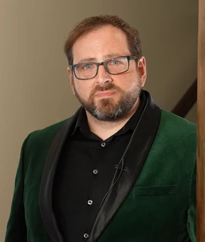
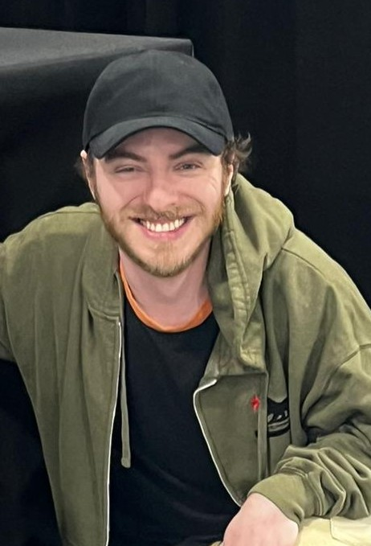

Five Nights at Freddy's Voice Actors
The Five Nights at Freddy's (FNaF) series features a wide range of voice actors who bring its characters to life across various games from FNaF 1 to FNaF Help Wanted 2. Here's a summary of some reoccuring voice actors involved in the franchise:
Scott Cawthon (Creator and 3 Voices)
Scott Braden Cawthon is an American game developer, publisher, author, animator, screenwriter, and film producer who is the creator and original developer of the Five Nights at Freddy's franchise, including the Clickteam era of games, spin-offs, and troll games.
- Ralph aka The Phone Guy appeared in FNaF 1/2/3/4,Ulimate Custom Night and FNaF:Help Wanted
- Phone Dude appeared in FNaF 3 and FNaF:Help Wanted
- Himself in Security Breach: Fury's Rage
Kellen Goff (10 Voices)
Kellen Goff is a Los Angeles-based, American voice actor known for a variety of roles spanning video games, animation and commercials. His most notable roles include Funtime Freddy from Five Nights at Freddy's, Overhaul from My Hero Academia, Fiddlesticks from League of Legends, and most recently, Diavolo in Jojo's Bizarre Adventure.
- Funtime Freddy was Kellen's first FNaF character to voice act which appeared in FNaF Sister Location,Five Nights at Freddy's:Help Wanted,Five Nights at Freddy's AR: Special Delivery and Five Nights at Freddy's:Help Wanted 2
- Kellen voiced for Molten Freddy in Freddy Fazbear's Pizzeria Simulator and Ulimate Custom Night.
- Kellen voiced for Fredbear in Ulimate Custom Night. The only way to see Fredbear is by using the Death Coin on Golden Freddy when set to 1.
- Kellen voiced for Freddy Fazbear in "Freddy & Friends: On Tour" which is a 4 episode series to show seek peeks for Five Nights at Freddy's:Security Breach. Kellen also voiced Freddy and Foxy in Funko Fusion which a third-person action game developed by 10:10 Games.
- Kellen voiced for Glamrock Freddy in Five Nights at Freddy's:Security Breach and Five Nights at Freddy's:Help Wanted 2.
- Kellen voiced for Daycare Attendant in Five Nights at Freddy's:Security Breach and Five Nights at Freddy's:Help Wanted 2.
- Kellen voiced for Foxy in the FNaF Movie.
- Kellen voiced for Jack-o-Moon which is a Halloween version of Moon which is one variant of the Daycare Attendant.
Heather Masters (9 Voices)
Heather Masters is a voice actress that voices characters for the Five Nights at Freddy's franchise. She is known for Circus Baby in lots of titles.
- Heather voiced for Circus Baby in FNaF World to tease Scott's next game in the franchise named Five Nights at Freddy's Sister Location but she wasn't fully showed as it was just showed her eyes.
- Heather got to fully voice Circus Baby in Five Nights at Freddy's:Sister Location. Circus Baby is also seen in Ulimate Custom Night, Five Nights at Freddy's:Help Wanted,Five Nights at Freddy's AR: Special Delivery and Five Nights at Freddy's:Help Wanted 2.
- Heather voiced for a character named Ennard which is all the animatronics in Sister Location combined. Ennard also appears in Ulimate Custom Night, Five Nights at Freddy's Help Wanted and Five Nights at Freddy's Help Wanted 2.
- Heather voiced for 8-bit Baby which only appears in Five Nights at Freddy's AR:Special Delivery.
- Heather voiced for Scrap Baby which is a different version of Circus Baby but more dismantled. Scrap Baby is introduced Freddy Fazbear's Pizzeria Simulator and appears again in Ulimate Custom Night and Five Nights at Freddy's:Help Wanted 2.
- Heather voiced for PlushBaby which has 3 additional versions. PlushBaby was introduced in Five Nights at Freddy's Help Wanted and appeared again in Five Nights at Freddy's:Help Wanted 2.
- Heather voiced for Chica in "Freddy & Friends: On Tour" which is a 4 episode series to show seek peeks for Five Nights at Freddy's:Security Breach.
- Heather voiced for Vanessa in Five Nights at Freddy's:Security Breach.
- Heather voiced for Glamrock Chica in Five Nights at Freddy's:Security Breach and appears again for Five Nights at Freddy's:Help Wanted 2.
- Heather voiced for Carnival Nurse in Five Nights at Freddy's Help Wanted 2.
Andy Field(3 Voices)

Andy Field is a voice actor that voices characters for the Five Nights at Freddy's franchise. He is particularly known for voicing HandUnit in Five Nights at Freddy's: Sister Location and Five Nights at Freddy's: Help Wanted.
- Andy voiced for HandUnit in Five Nights at Freddy's:Sister Location and appeared again in Five Nights at Freddy's:Help Wanted and Five Nights at Freddy's:Help Wanted 2
- Andy voiced for Tutorial Unit in Freddy Fazbear's Pizzeria Simulator and appears again in Five Nights at Freddy's AR: Special Delivery.
- Andy voiced for Dread Unit in Five Nights at Freddy's: Security Breach and again in Five Nights at Freddy's:Help Wanted 2.